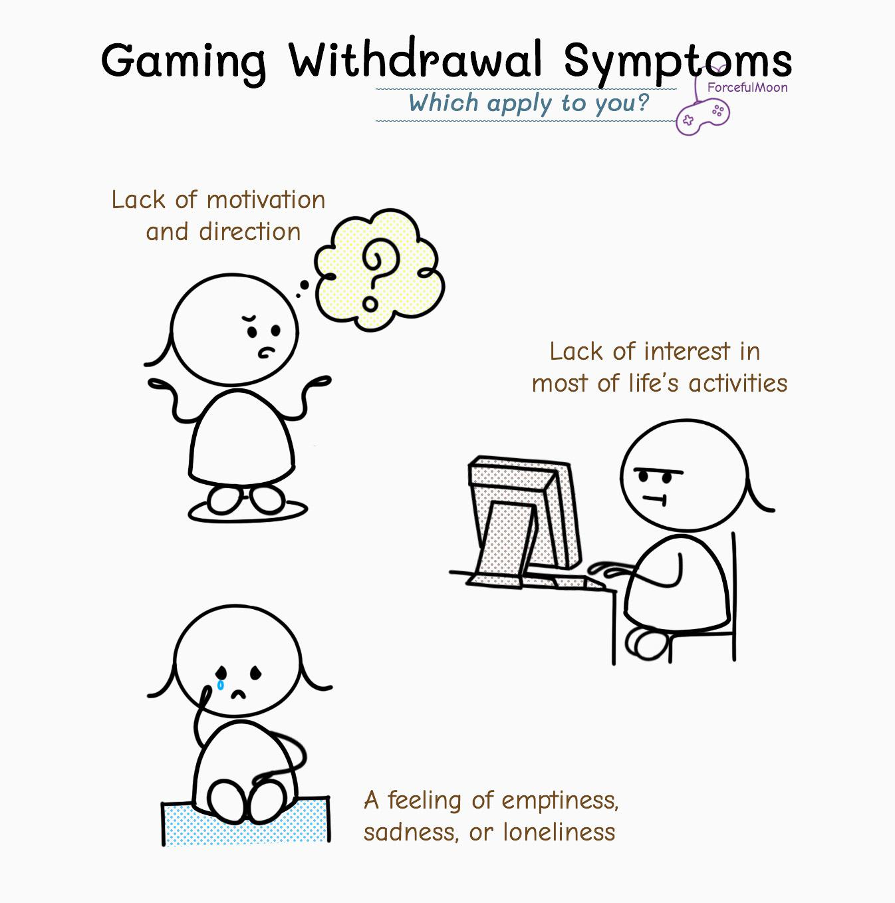
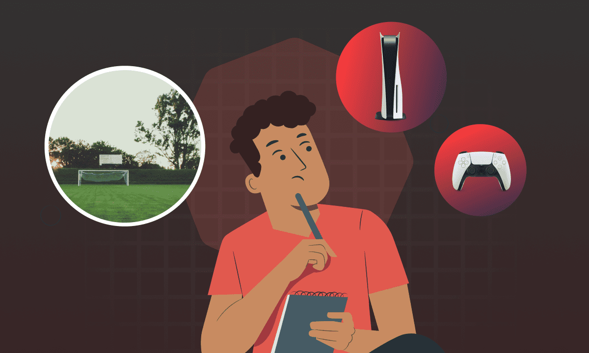

About Game-Xit
Gaming addiction is a serious behavioral health issue impacting players of all ages worldwide. In 2019, the World Health Organization officially classified it as a mental health condition known as "Gaming Disorder."
At Game-Xit, we’re on a mission to bring awareness to video game addiction—a growing concern in today’s digital world.

Common Signs of Gaming Addiction
- Exponential Increase of Gaming Time
- Neglecting Prior Responsibilities
- Withdrawal Symptoms When Not Playing
- Loss of Interest in Other Hobbies
Casual play turns into hours-long sessions. The individual may lose track of time or feel compelled to keep playing.

Tasks like studying, work, or chores are delayed or skipped. This can result in poor performance or tension at home.

Some experience irritability, anxiety, or restlessness when they are unable to game.
Activities that once brought joy become boring or pointless in comparison to gaming.
Why Does It Happen?
Recognizing the problem is the first sign of strength—and change is possible. Gaming addiction can feel isolating, but you’re not alone in facing it. At Game-Xit, we believe recovery doesn’t start with judgment—it starts with understanding, compassion, and small, consistent steps toward a healthier life.

Whether you’re noticing shifts in your mood, changes in your behavior, or hearing concerns from loved ones, the important thing is taking action. Gaming itself isn’t inherently harmful, but when it begins to interfere with daily responsibilities, relationships, or your sense of well-being, it may be time to seek support.
We provide access to helpful resources including self-assessment toolsself-assessment tools, articles on healthy habits, and professional referrals to therapists who specialize in gaming-related issues. For many, cognitive behavioral therapy (CBT) is an effective method to identify thought patterns and triggers associated with excessive gaming. Others may benefit from joining a support group, where shared experiences can help build resilience and reduce feelings of shame or guilt.
Creating structure can also be a powerful tool. Setting boundaries around screen time, reintroducing offline hobbies, improving sleep, and re-establishing social connections all contribute to a stronger foundation for long-term change. Even small lifestyle adjustments—like regular exercise or limiting gaming to certain hours—can lead to a noticeable shift in how you feel day-to-day.
Recovery isn’t about quitting games entirely unless that’s what’s needed—it’s about finding balance, regaining control, and reconnecting with real-world priorities. If you're feeling overwhelmed or unsure where to start, our team is here to listen. Visit our contact page to speak confidentially with someone who understands. A balanced, healthier future is within reach—and you don’t have to walk that path alone.
Getting Help
Recovery starts with awareness. Game-Xit offers resources, professional referrals, and support to guide individuals to regain control.
Cognitive Behavioral Therapy (CBT), support groups, structured routines, and lifestyle changes are proven to help.
Visit our contact page to take that first step toward a balanced life.